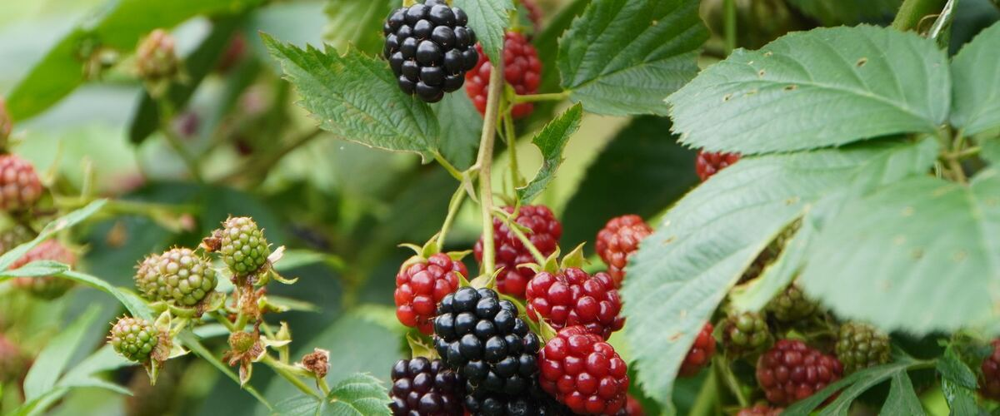

When to plant blackberries in Prineville, OR
Plant blackberry canes in Prineville Apr 20 – Jun 8.
- Difficulty
- Easy
- Sun
- Full sun
- Spacing
- 3 to 5 feet apart for upright types, 5 to 8 feet for trailing
- Planting depth
- Same depth as in the pot, roots covered
- Frost
- Hardy perennial; comes back every year
- First harvest
- A light crop in year two, full crops from year three
Why these dates
Prineville's typical last spring frost is June 1. As a hardy perennial, this crop doesn't need to wait for that date. In the high desert and mountains, though, the soil usually isn't ready to work until about April 20.
High desert and mountains. Central and high eastern Oregon. Frost is possible almost any month. Use row covers, wall-o-water or cloches for warm crops, and choose short-season varieties.
How to grow blackberries in Prineville
- Pick a sunny spot with soil that drains well, and mix in an inch or two of compost.
- Plant blackberry canes Apr 20 – Jun 8, 3 to 5 feet apart for upright types, 5 to 8 feet for trailing. Same depth as in the pot, roots covered.
- Train canes on a two-wire trellis. Canes fruit in their second year; after harvest, cut the canes that fruited to the ground and tie up the new ones.
- Harvest: Pick when berries turn from shiny to slightly dull black and pull off easily. Check every two or three days in season.
Key numbers
- Year 3First full crop
- Their second yearCanes fruit in
- Less cold-hardyTrailing hardiness
- Spotted wing drosophilaBiggest risk
Growing notes
What makes the difference in Northwest gardens, in plain language.
Trailing, semi-erect or upright
Trailing blackberries like Marion and Black Diamond have long, flexible canes that need a trellis, and they're known for rich flavor. They're the least cold-hardy, so they do best in mild west-side gardens. Semi-erect types like Triple Crown are thornless and vigorous with big, sweet berries. Upright and hardier types like Chester handle colder eastern and higher-elevation gardens better.
Never plant Himalayan blackberry. It's an invasive weed that already smothers roadsides and creeks across the region.
How the two-year cane cycle works
Blackberry roots live for many years, but each cane lives for only two. In its first year a cane grows long and leafy; in its second year it flowers, fruits and dies. Once you see this, pruning is simple: after harvest, cut the canes that just fruited to the ground and tie the new canes onto the trellis for next year.
With trailing types, let new canes run along the ground under the trellis during summer, then lift and tie them in late winter. This keeps them out of the way of pickers and protects them from cold.
Picking and spotted wing drosophila
Spotted wing drosophila is a small fruit fly that lays eggs inside ripening berries, unlike common fruit flies that only go after damaged fruit. Within days the berries turn soft and leaky. Pick every two or three days in season, remove overripe and damaged berries, and chill your harvest right away, which slows any larvae inside.
Ripe blackberries turn from shiny to slightly dull black and come off with almost no tug.
Common questions
When is the last frost in Prineville, OR?
Typically June 1. In 9 years out of 10, frost is over by June 22. These are 1991–2020 NOAA climate normals for Prineville.
Is it too late to plant blackberries in Prineville?
The spring planting window runs through June 8. Potted plants can still go in later if you water them faithfully through their first summer.
How long until I can pick blackberries?
A light crop in year two, full crops from year three. Pick when berries turn from shiny to slightly dull black and pull off easily. Check every two or three days in season.
Is Marionberry a blackberry?
Yes. Marion is a trailing blackberry variety developed in Oregon and is the region's best-known blackberry. It's thorny and needs a trellis, but its flavor is hard to beat.
Why are my blackberries mushy with tiny worms?
That's usually spotted wing drosophila, a fruit fly that lays eggs in ripe berries. Pick every two or three days, clear out any overripe fruit, and refrigerate berries right after picking.
How do I get rid of wild Himalayan blackberry?
Cut canes to the ground and dig out the root crowns, then keep pulling or cutting regrowth for a few seasons. It spreads by both roots and bird-dropped seeds, so persistent removal is the key.
Also plant in Prineville around the same time
Planting dates for blackberries in nearby areas
- Bend and Redmond, OR Apr 28 – Jun 16
- Klamath Falls, OR Apr 28 – Jun 16
- Burns, OR Apr 30 – Jun 18
- Madras, OR Apr 20 – Jun 8
- Lakeview, OR Apr 23 – Jun 11
- Baker City, OR Apr 20 – Jun 8
Full planting calendar for Prineville · Blackberries in every city